PEMROGRAMAN
Di dalam program java, kita bukan hanya bisa menulis satu kalimat atau beberapa kalimat yang sudah dideklerasikan sebelumnya di aplikasi notepad ataupun sejenisnya, tetapi kita juga bisa menginputkan dari keyboard yang nantinya akan ditampilkan di console atau cmd sehingga program menjadi lebih interaktif. Yaitu dengan cara :
1. Buffered reader
Buffered reader adalah salah satu class pemrograman java yang dapat menerima input dari pengguna. BufferedReader berada di package java.io jadi untuk mendapatkan input dari keyboard
4.1 Class
Pada pertemuan sebelumnya kita membahas mengenai bagaimana kita membuat dua file java yang saling berhubungan, dimana salah satu kelas berfungsi untuk mengakses method dari kelas yang lain. File java tersebut adalah :
- Kelas2.java -> membuat sebuah class dengan nama “Kelas2.class”
- IsiKelas2.java -> membuat class “IsiKelas2.class” untuk mengakses class Kelas2
//Kode program dari Kelas2.java
public class Kelas2
{
//Membuat method static Mahasiswa
public static void Mahasiswa()
{
System.out.println(“Ada Mahasiswa Kelas 2”);
}
//Membuat method Dosen
void Dosen()
{
System.out.println(“Ada Dosen”);
}
}
//Kode program dari IsiKelas2.java
public class IsiKelas2
{
//Membuat method main
public static void main(String[] args)
{
Kelas2.Mahasiswa();
Kelas2 panggil = new Kelas2;
panggil.Dosen;
}
}
Pada class “Kelas2.java” diawali dengan membuat public class “Kelas2” agar dapat diakses/digunakan oleh kelas lain, contohnya class “IsiKelas2.java”. Didalam kelas “Kelas2.java” terdapat dua buah method, yaitu “Mahasiswa()” dan “Dosen()”. Perhatikan bagaimana cara menulis method dan bagaimana cara memanggil kedua method tersebut pada class “IsiKelas2.java”.
Secara umum method (fungsi) ada dua macam, yaitu method yang mengembalikan nilai (ada tipe data dan return value) dan method yang tidak mengembalikan nilai (tipe datanya adalah “void”). Method set() adalah proses pemberian nilai kedalam method agar selanjutnya dapat diolah, sedangkan method get() adalah proses mendapatkan nilai yang telah diolah.
Pernyataan if (satu kondisi)
Blok program if untuk satu kondisi berarti hanya ada sebuah blok aksi yang akan dikerjakan jika syarat kondisi terpenuhi. Berarti ketika eksekusi program sampai pada blok percabangan akan dilakukan pengecekan nilai variabel ketemu, jika variabel ketemu bernilai true maka aksi menuliskan nilai variabel ketemu kelayar tidak dikerjakan
If else (dua kondisi)
Blog program if-else dipergunakan untuk menyatakan percabangan dua kondisi yakni ada dua blok aksi yang dipilih untuk dikerjakan jika syarat kondisi aksi terpenuhi. Saat pembacaan program sampai pada blok if-else maka akas=n dilakukan pengecekan terhadap syarat kondisi percabangan yang ada pada deklarasi if, jika syarat dipenuhi maka yang akan dijalankan adalah aksi yang ada didalam blok if, tapi jika syarat tidak dipenuhi maka aksi yang dikerjakan adalah blok if else
else if
Saat menggunakan statemen if, else if, else ada beberapa hal yang harus diperhatikan :
- Sebuah statemen if dapat memiliki nol atau satu statemen else dan harus digunakan setelah statemen else if.
- Sebuah statemen if dapat memiliki nol atau banyak statemen else if dan harus digunakan sebelum statemen else.
- Setelah sebuah statemen else if dieksekusi statemen else if atau else yang alain tidak aakn diperikasa (akan langsung melonpat pada kode setelah else terakhir).
Laporan kontrol loop yang digunakan untuk mengeksekusi pernyataan atau sekelompok pernyataan beberapa kali. Misalkan Anda ingin mencetak angka 10 kali. Alih-alih menggunakan 10 System.out.println () pernyataan, kita bisa hanya loop melalui System.out.println () pernyataan tunggal 10 kali. Mari kita lihat konstruksi perulangan yang didukung oleh Java.
'Untuk' loop Pertimbangkan potongan kode berikut:
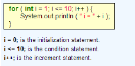
Inisialisasi (i = 0;) pernyataan dieksekusi sekali. Kemudian, kondisi (i) pernyataan diperiksa. Jika mengevaluasi untuk Benar, tubuh loop dijalankan. Jika mengevaluasi ke Salah, lingkaran dihentikan dan pernyataan setelah badan loop dijalankan. Setelah semua pernyataan dalam tubuh loop dieksekusi, kontrol melompat ke pernyataan kenaikan dan pernyataan kondisi dievaluasi lagi. Setiap loop berikut sintaks ini:
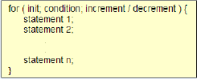
KETERAMPILAN KOMPUTER
Disini saya mengisntal windows 7, dengan menggunakan virtualbox, langsung saja ini dia caranya :
- Buka virtualbox dan pilih new > pilih sistem operasi microsoft windows > dan pilih version sesuai yang anda ingin , disini saya menggunakan windows 7. Kemudian klik next
- Klik next terus hingga muncul kotak dialog kemudian klik finish. storage kemudian pilih cd file ISO yang anda gunakan. Lalu klik ok dan jalankan.
- Pilihlah indonesia pada currency format. UntukLanguage install dan Keyboard or method biarkan default. Kemudian pilihNext.
- Kemudian klik install now Untukmemulaiinstalasi windows 7
- Lalu pilih windows 7 ultimate kemudian pilih next.
- Centangkolom i accept ,Kemudianklik “Next”.
- PilihPartisi yang akan di jadikan Booting untukWindows 7. Klik drive advanced > next > apply lalu next.
- Instalasi sedang berlangsung, tunggu hingga beberapa menit, hal ini membutuhkan waktu cukup lama
- Jika sudah selesai computer akan Booting dengan OS Windows 7 yang sudahkita Install tadi
- Isikan nama komputer anda, lalu klik next.
- Kemudian masukkan password. Gunakanlah password yang simpel tapi susah ditebak kemudian klik next
- Pilih Mode Update yang anda inginkan. JikaandatidakmenginginkanNotifikasi Update makapilih “Ask Me Later”.
- PilihLokasiKomputersekaranguntukmensettingkoneksi internet anda.
- Proses Finalizhingdan computer akanme-restart dengansendirinya.
- Installasi windows 7 ultimate sudahselesai.
ALGORITMA STRUKTUR DATA
Di Java dan bahasa pemrograman lainnya, ada satu kemampuan dimana kita dapat menggunakan satu variabel untuk menyimpan sekumpulan data dan memanipulasinya lebih efisien disebut dengan Array
Array adalah object yang digunakan untuk menyimpan banyak data dengan tipe yang sama.
Tipe dari array bisa : tipe data primitif atau class
Terdapat 3 langkah untuk membuat array:
- Mendeklarasikan variabel array
- Memcreate array beserta ukurannya
- Memberikan sebuah nilai pada setiap element array.
Rekursif berarti bahwa suatu proses bisa memanggil dirinya sendiri. Rekursif adalah kemampuan suatu rutin untuk memanggil dirinya sendiri. Dalam Rekursif sebenarnya terkandung pengertian prosedur dan fungsi. Perbedaannya adalah bahwa rekursif bisa memanggil ke dirinya sendiri, tetapi prosedur dan fungsi harus dipanggil lewat pemanggil prosedur dan fungsi. Rekursif merupakan teknik pemrograman yang penting dan beberapa bahasa pemrograman mendukung keberadaan proses rekursif ini. Dalam prosedur dan fungsi, pemanggilan ke dirinya sendiri bisa berarti proses berulang yang tidak bisa diketahui kapan akan berakhir.
Contoh paling sederhana dari proses rekursif ini adalah proses menghitung nilai faktorial dari suatu bilangan bulat positif dan mencari deret Fibbonacci dari suatu bilangan bulat.
contoh hubungan rekurens (recurrence relation), yang berarti bahwa nilai suatu fungsi dengan argumen tertentu bisa dihitung dari fungsi yang sama dengan argumen yang lebih kecil. Persamaan (1) tidak bersifat rekursif, disebut nilai awal atau basis. Setiap fungsi rekursif paling sedikit mempunyai satu nilai awal, jika tidak fungsi tersebut tidak bisa dihitung secara eksplisit.
Bilangan Fibbonacci didefinisikan sebagai berikut
1 1 2 3 5 8 13 21 34 55 89 …
dari barisan tersebut dapat dilihat bahwa bilangan ke-N (N>2) dalam barisan dapat dicari dari dua bilangan sebelumnya yang terdekat dengan bilangan N, yaitu bilangan ke-(N-1) dan bilangan ke-(N-2), sehingga dapat dirumuskan sebagai
Fibbonacci(1) = 1
Fibbonacci(2) = 1
Fibbonacci(N) = Fibbonacci(N-1) + Fibbonacci(N-2)
Dengan persamaan (1) dan (2) adalah basis dan persamaan (3) adalah rekurensnya Dalam beberapa situasi, pemecahan secara rekursif maupun secara iteratif mempunyai keuntungan dan kekurangan yang bisa saling diperbandingkan. Adalah cukup sulit untuk menentukan mana yang paling sederhana, paling jelas, paling efisien dan paling mudah disbanding yang lain. Boleh dikatakan pemilihan cara iterative maupun rekursif merupakan kesenangan seorang programmer dan tergantung konteks permasalahan yang akan dipecahkan sesuai dengan kesanggupan yang bersangkutan.
Algoritma Insertion Sort
Salah satu algoritma sorting yang paling sederhana adalah insertion sort. Algoritma insertion sort pada dasarnya memilah data yang akan urutkan menjadi 2 bagian, yang belum diurutkan dan yang sudah diurutkan. Elemen pertama diambil dari bagian array yang belum diurutkan dan kemudian diletakkan sesuai posisinya pada bagian lain dari array yang telah diurutkan. Langkah ini dilakukan secara berulang hingga tak ada lagi elemen tersisa pada bagian array yang belum diurutkan.
Metode insection sort merupakan metode yang mengurutkan bilangan-bilangan yang telah terbaca, dan berikutnya secara berulang akan menyisipkan bilangan-bilangan dalam array yang belum terbaca ke sisi kiri array yang telah terurut. Kita mengambil pada bilangan yang paling kiri. Bilangan tersebut dikatakan urut terhadap dirinya sendiri karena bilangan yang di bandingkan baru 1.
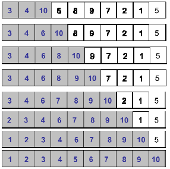
Algortima Selection Sort
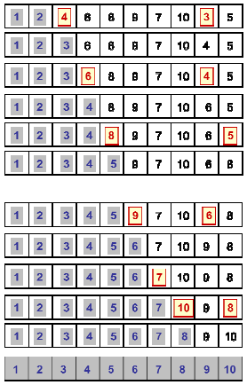
Ide utama dari algoritma selection sort adalah memilih elemen dengan nilai paling rendah dan menukar elemen yang terpilih dengan elemen ke-i. Nilai dari i dimulai dari 1 ke n, dimana n adalah jumlah total elemen dikurangi 1.
Cek seluruh array dan cari array yang mempunyai nilai terkecil index 8 (1). Setelah ketemu tukar dengan array yang berada di pojok kiri (3).
Setelah di tukar bagian yang berwarna abu-abu merupakan index yang telah terurutkan.
Kemudian cari bilangan terkecil selanjutnya (selain di kotak abu-abu) yaitu bilangan 2 dan tukar dengan sebelah array yang telah terurutkan.
Dua array sudah terurutkan. Kemudian ulangi langkah di atas dan lakukan langkah yang sama yaitu pilih terkecil dan tukar dengan sebelah array yang sudah terurutkan.
METODE NUMERIK
Model matematika
Model dibuat untuk memudahkan orang dalam menganalisis suatu permasalahan, disamping untuk menghemat waktu, biaya, dan juga mengurangi resiko. Dengan adanya sistem komputer yang demikian canggih saat ini, maka pemodelan ini menjadi lebih mudah dan nyaman dilakukan. Dari sini lahirlah simulasi yang menggunakan komputer untuk menirukan hal-hal yang ada di dunia nyata, yang dapat dianalisis, dievaluasi dan didapatkan hasilnya, serta dapat diulangi kapanpun dengan hasil yang sama. Pemodelan matematik diperlukan untuk membantu menyelesaikan permasalahan rekayasa (permasalahan riil). Gambaran tahapanpemrosesan masalah rekayasa yang secara analitis sulit diselesaikan selanjutnya dibawa ke bentuk model matematik dan diselesaikan secara matematis, aljabar atau statistik dan komputasi. Apabila telah diperoleh penyelesaian matematik proses selanjutnya mengimplementasikan hasil matematis ke masalah rekayasa sbb:
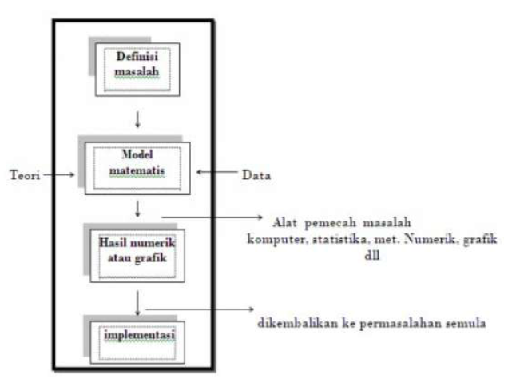
Memahami deret taylor
Metode numeric digunakan untuk menyelesaikan persoalan dimana perhitungan secara analitik tidak dapat digunakan. Metode numeric ini berangkat dari pemikiran bahwa permasalahan dapat diselesaikan dengan menggunakan pendekatan-pendekatan yang dapat dipertanggung-jawabkan secara analitik. Metode numerik ini disajikan dalam bentuk algoritma-algoritma yang dapat dihitung secara cepat dan mudah.Pendekatan yang digunakan dalam metode numerik merupakan pendekatan analisis matematis. Sehingga dasar pemikirannya tidak keluar jauh dari dasar pemikiran analitis, hanya saja pemakaian grafis dan teknik perhitungan yang mudah merupakan pertimbangan dalam pemakaian metode numerik.
Ide awal metode ini adalah metode table, dimana area dibagi menjadi N bagian.Hanya saja metode biseksi ini membagi range menjadi 2 bagian, dari dua bagian ini dipilih bagian mana yang mengandung dan bagian yang tidak mengandung akar dibuang.Hal ini dilakukan berulang-ulang hingga diperoleh akar persamaan.
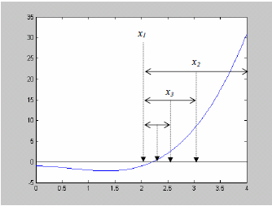
Untuk menggunakan metode biseksi, terlebih dahulu ditentukan batas bawah (a) dan batas atas (b).Kemudian dihitung nilai tengah. Dari nilai x ini perlu dilakukan pengecekan keberadaan akar. Secara matematik, suatu range terdapat akar persamaan bila f(a) dan f(b) berlawanan tanda atau dituliskan
Metode regula falsi adalah metode pencarian akar persamaan dengan memanfaatkan kemiringan dan selisih tinggi dari dua titik batas range. Seperti halnya metode biseksi, metode ini bekerja secara iterasi dengan melakukan update range.Titik pendekatan yang digunakan oleh metode regula-falsi adalah. Dengan kata lain titik pendekatan x adalah nilai rata-rata range berdasarkan F(x).Metode regula falsi secara grafis digambarkan sebagai berikut :
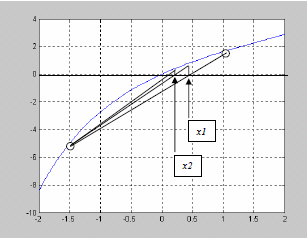
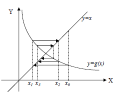
Metode iterasi sederhana adalah metode yang memisahkan x dengan sebagian x yang lain sehingga diperoleh : x = g(x). Sebagai contoh untuk menyelesaikan persamaan x – ex = 0 maka persamaan di ubah menjadi : x = ex atau g(x) = ex. g(x) inilah yang menjadi dasar iterasi pada metode iterasi sederhana ini.Metode iterasi sederhana secara grafis dapat dijelaskan sebagai berikut :
Pada metode ini, luasan yang dibatasi oleh y = f(x) dan sumbu x dibagi menjadi N bagian pada range x = [a,b] yang akan dihitung.Kemudian dihitung tinggi dari setiap 3 tep ke-I yaitu f(xi).Li adalah luas setiap persegi panjang dimana Li=f(xi).Δxi
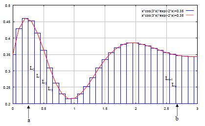
PENGGUNAAN BASIS DATA
MySQL adalah suatu perangkat lunak database relasi (Relational Database Management System atau RDBMS), seperti halnya ORACLE, Postgresql, MS SQL, dan sebagainya. MySQL dibangun, didistribusikan dan didukung oleh MYSQL AB. MYSQL AB merupakan perusahaan komersial yang dibiayai oleh pengembang MYSQL. MySQL AB menyebut produknya sebagai database open source terpopuler di dunia yang bisa digunakan untuk platform Web, dan baik untuk kategori open source maupun umum.
operator mysql
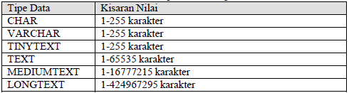
DDL atau Data Definition Language adalah bagian dari sql yang digunakan untuk mendefinisikan data dan objek database. Apabila perintah ini digunakan, entri akan dibuat ke dalam kamus data dari SQL. Perintah DDL sebagai berikut :
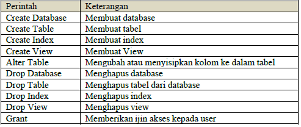
Mari kita melihat struktur dan penggunaan perintah DDL empat dasar:
- create, Instalasi sistem manajemen database (DBMS) pada komputer memungkinkan Anda untuk membuat dan mengelola banyak database independen
- use, Perintah USE memungkinkan Anda untuk menentukan database yang ingin bekerja dengan Anda dalam DBMS
- alter, Setelah Anda telah membuat tabel dalam database, Anda mungkin ingin memodifikasi definisi itu.Perintah ALTER yang memungkinkan Anda untuk membuat perubahan pada struktur tabel tanpa menghapus dan menciptakan tabel baru dengan nama yang berbeda.
- dorp, Perintah terakhir dari Data Definition Language, DROP yang memungkinkan kita untuk menghapus seluruh objek database dari DBMS. Gunakan perintah ini dengan hati-hati! Ingat bahwa perintah DROP menghapus data keseluruhan struktur dari database Anda.
DML (Data Manipulation Language) adalah bahasa yang memungkinkan pengguna mengakses atau memanipulasi data seperti yang diatur oleh model data. Manipulasi data adalah :
Pengambilan informasi yang disimpan dalam basisdata
Penempatan informasi baru dalam basisdata
Penghapusan informasi dari basisdata
Modifikasi informasi yang disimpan dalam basisdata
DML (Data Manipulation Language) merupakan bahasa yang bertujuan memudahkan pemakai untuk mengakses data sebagaimana direpresentasikan oleh model data. Ada 2 jenis DML, yaitu :
- Prosedural, yang mensyaratkan agar pemakai menentukan, data apa yang diinginkan serta bagaimana cara mendapatkannya
- Nonprosedural, yang membuat pemakai dapat menentukan data apa yang diinginkan tanpa menyebutkan bagaimana cara mendapatkannya.
Query adalah pernyataan yang meminta pengguna mengambil informasi. Bagian DML yang terlibat dalam pengambilan informasi disebut bahasa query. Istilah bahasa query sering disamakan dengan istilah bahasa manipulasi data. Sedangkan SQL adalah sebuah sintaks untuk mengeksekusi query. contoh :
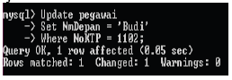